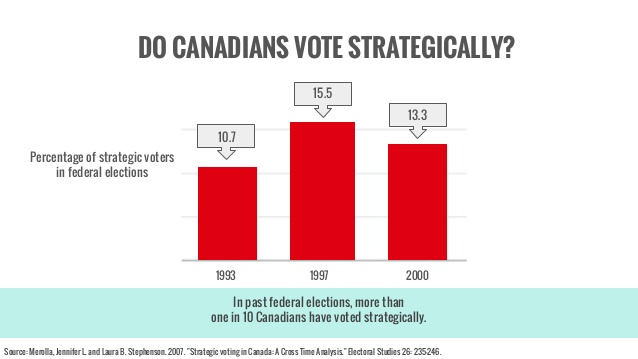

Things are shaping up for extraordinary developments in the UK, and I'm not talking about Brexit. Well, I am, but not directly. I'm talking about strategic or tactical voting. In Australia we are mightily protected from such dilemmas by preferential or instant runoff voting whereby, if your first preference doesn't win the election, your vote passes to your next preference and so on until it is counted. In the UK as readers will know, they use a remarkably common and crazy system of first past the post.
Things are shaping up for extraordinary developments in the UK, and I'm not talking about Brexit. Well, I am, but not directly. I'm talking about strategic or tactical voting. In Australia we are mightily protected from such dilemmas by preferential or instant runoff voting whereby, if your first preference doesn't win the election, your vote passes to your next preference and so on until it is counted. In the UK as readers will know, they use a remarkably common and crazy system of first past the post.
And now if there's a general election it's entirely possible for the anti-no-dealers (the Lib Dems and the Labour Party) to so steal votes from each other that those relaxed and comfortable about a no-deal Brexit could win far fewer votes yet win government handsomely.
What's needed to stop that is some strategic voting response. Essentially voters for the Lib Dems or the Labour Party need to vote for whichever of these two candidates is most likely to win – so they don't waste their vote. Ideally the two parties would sign some agreement to work out which of them would stand and would only stand one candidate between them. But they can't agree on that.
And they can't agree on any informal version of the same thing – for instance with the party of one side or the other agreeing to 'run dead' in specific electorates. But it seems to me there is another way. A coalition of those opposing a no-deal-Brexit could fund some authoritative process whereby the electorates were polled up to – say – a week before the election with an endorsement coming for one or the other of the Lib Dem and Labour candidates so that anyone who didn't want to waste their vote was well informed about which of the anti-no-deal Brexit candidates to cast their vote for.
If this was well funded, one could imagine it swinging a substantial number of votes – especially as it gained the public support of those Labour and Lib Dem politicians who independently endorsed it. (It might be harder for sitting Labour members to do so with party discipline at all, but that shouldn't stop Labour elders from doing so.)

Like the UK, Canada has three major parties creating all kinds of need and scope for tactical voting.George Soros where are you?
there are several initiatives in this direction, such as https://www.tactical-vote.uk/
but the betting markets and opinion polls predict a big victory to the conservatives, attributed to Boris Johnson taking over from Theresa May. He does seem to appeal to a segment no other conservative does.
We're in the somewhat humorous situation where the government could rule for another 3 years but wants an election because it banks on getting all the pro-Brexit votes if there is an election before an actual brexit. So the government wants to be sacked, but is kept in power by the refusal of the opposition to sack them. This is because the opposition doesnt want an election until either after a (possibly illegal) no-deal brexit or when the government has been forced to delay a no-deal brexit, in the hope that either will mean the pro-Brexit slide wont happen. It's pantomime time once again in London.
What has been very noticeable is how expertly Boris has managed the visuals of the last few months. Everytime there is bad news, he makes sure the only photographs you can take from his are those that make him look positive and manly, like talking to farmers in Scotland or sitting next to Trump. He clearly planned that perfectly yesterday, just as he did when he was defeated in parliament (he was in Scotland then).
Those handing out the bad news for Boris are miles behind the pictorial stakes, with images of them standing in front of an old building in London, looking all elitist. Corbyn at least dresses up in a good suit, but most of the anti-Brexiteers are just not organised when it comes to the visuals, making for easy pickings for team Boris. Its like watching professionals versus amateurs.
I have been betting throughout on a 'Brexit in name only' kind of outcome, which is what we have had so far and that was also the Theresa May deal. However, with Boris and his mate Cummins in charge, no-deal is starting to look distinctly more likely, even after the impressive willingness of the one nation conservatives to organise themselves against that outcome.
One scenario is that the government will try and fudge the very prescriptive 'Benn Bill' that supposedly forces the government to ask for an extension. They could for instance ask for an extension at the last minute and then immediately afterwards repeal that request. They could send a letter asking for an extension and then shut down the government so that there is no-one to reply to, such as by all going on a holiday. If that leads to a caretaker government being imposed by the House last-minute that forces an extension, followed by elections, Boris and his team will seem the winners.
Indeed, if Boris were forced to ask for an extension and gets it, it would still seem a good political outcome for him. He can then rile even more against the anti-brexiteers, claiming they scuppered a potential deal with Brussels, and then again trying to go for an election between now and the next deadline. He is on track to win that election big time, which is why Nigel Farage of course is now trying to distance himself from Boris, fearful his party will be absorbed entirely by the Tories.
So all in all, things are looking decidedly good for Boris, politically speaking.
Boris may well prosper, though I think it won't take long for him to become very unpopular – not that that really matters in the UK system.
But I'm not too sure all the visuals are quite so tickety boo.
https://www.youtube.com/watch?v=ZVOV3sU8Ays
Thanks for the site. So the task is to ensure it's integrity and then publicise and campaign for it. The fact is that the Labour and Lib Dems command enough votes between them to easily win a first past the post election if they can get their act together.